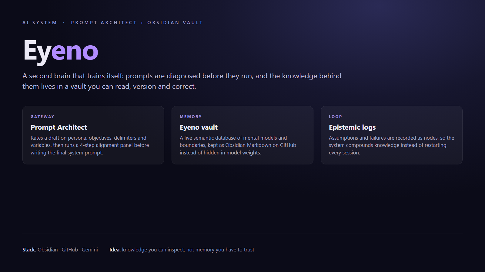

Published: July 2026 | Category: Artificial Intelligence & Cloud Architecture
Most AI systems suffer from a core flaw: they have no memory of how you think. You start a chat, train it with your guidelines, and the moment that session closes, that context is gone forever. Over the past few weeks, we set out to build a permanent, compounding cognitive layer called Eyeno, integrated into a custom Prompt Architect application.
Here is the story and technical blueprint of how we connected prompt engineering with an Obsidian knowledge graph on GitHub to build a self-training AI ecosystem.
Pipeline overview: what the Prompt Architect checks, and the vault nodes it queries.
At the center of our workspace is the Prompt Architect. It takes raw, ambiguous prompts (e.g., "Make me a react component") and runs them through a diagnostic pipeline. It rates the draft across multiple prompt engineering metrics—role/persona, objectives, delimiters, and variables—and generates a 4-step interactive alignment panel to clarify missing details.
Based on the user's answers, it synthesizes masterpiece, production-ready system prompts formatted in XML, persona-driven, or sequential chain-of-thought structures.
Instead of relying on LLM defaults, the Prompt Architect queries Eyeno—a live semantic database hosted in an Obsidian Markdown vault on GitHub. Eyeno is seeded with our exact mental models, behavioral guidelines, and core boundaries:
In parallel to any prompt query, the backend executes a semantic check against this database. If a prompt triggers keywords related to our boundaries, the system pulls these custom principles and merges them directly into the output prompt.

To train the brain dynamically without manually writing new nodes or uploading raw documents, we built a Continuous Learning Loop directly into the Express API backend.
When the final prompt is generated and sent to the client, the backend launches an asynchronous background process. A dedicated distillation model reads the finalized prompt, extracts the unique patterns, formatting techniques, and domain context, formats it into a clean Markdown node with double-bracket Wikilinks, and commits it back to the Obsidian GitHub repository.
// The Continuous Learning Loop (Server-Side Background Ingestion)
(async () => {
try {
const distillRes = await ai.models.generateContent({
model: "gemini-2.5-flash",
contents: "Extract reusable patterns from this prompt..."
});
// Create new markdown file and commit to Obsidian GitHub Repo
await createObsidianNote(distillRes.text, filename);
} catch (err) {
console.error("Failed to auto-train brain:", err);
}
})();
Through this loop, the brain scales its knowledge database automatically with every prompt you design, turning your daily engineering tasks into permanent structural learning.
The first version of the agent crashed whenever Gemini's free tier hit a quota wall. Two layers fixed that:
That last decision is the one I would repeat everywhere: keep state in a system that is designed to keep it, and let the server be replaceable.
By coupling an interactive prompt constructor with an Obsidian-backed GitHub repository, we created a closed-loop system where AI and human judgment constantly refine each other. Eyeno is no longer just a passive database—it's an active, self-expanding extension of our intelligence.
Author: Agu Chiedozie | Cloud & AI Systems Engineer